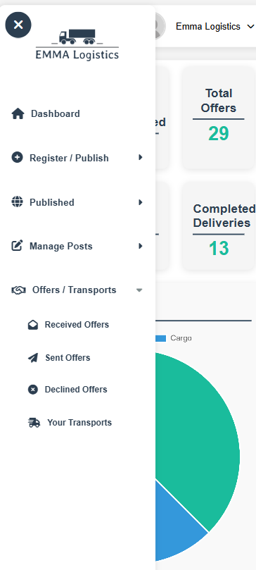

The Emma Logistics Platform is a next-generation solution designed to streamline freight and vehicle management. Built to enhance operational efficiency, this platform provides logistics professionals with real-time tracking, secure vehicle assignment, and seamless shipment coordination. The Emma Logistics ecosystem integrates both web and mobile applications, allowing for continuous management on the go.

Platform Highlights:
- Vehicle and Freight Management: Assign vehicles to shipments with detailed specifications, including weight capacity, cargo type, and route optimization. Real-time vehicle availability and freight tracking ensure seamless logistics management.
- Email Notifications: Receive automated alerts and notifications for shipment milestones, delivery statuses, and critical updates. Configurable notification preferences allow users to stay informed across different stages of freight operations.
- Secure API Integration: Ensure robust communication between services and users through OAuth 2.0 and JWT. TLS encryption secures data in transit, while API rate limiting and IP whitelisting protect against unauthorized access.
- Multilingual and Localization Support: Full language localization powered by i18next, with Bosnian as the primary language. Expandable to additional languages to cater to diverse user bases. Date, currency, and unit formats automatically adjust based on locale.
- Comprehensive User Authentication: Secure login with email and password, coupled with JWT token-based session management. Supports password recovery, two-factor authentication (2FA), and role-based access control (RBAC) to ensure user data security.
- Advanced Reporting and Analytics: Real-time dashboards provide insights into vehicle usage, freight status, and delivery performance. Customizable reports offer deeper analysis of logistics efficiency and operational bottlenecks.
- Mobile-Friendly Design: Fully responsive platform designed to function seamlessly on desktops, tablets, and smartphones. Mobile optimization allows users to manage shipments, vehicles, and offers on the go.
- Offer Management: Facilitate direct offers between freight providers and transporters. Users can suggest vehicle options, negotiate prices, and track offer statuses in real time.
Technical Specifications:
- Frontend: React (Vite) + TypeScript, ensuring fast load times and responsive UIs. Component-based architecture for scalability and maintainability.
- Backend: ASP.NET Core 8 with RESTful API architecture for high-performance data exchange and seamless integration with third-party services.
- API Calls: Axios for asynchronous API communication with built-in error handling, interceptors, and retry logic for enhanced reliability.
- Authentication: OAuth 2.0, JWT, and Basic Auth for different security levels. Integrated OAuth provider support (Google, Microsoft) for social login capabilities.
- Routing: Dynamic React Router DOM for intuitive navigation. Lazy loading and code splitting reduce load times and improve performance.
- Data Handling: MS SQL Database with optimized indexing and query performance. Entity Framework Core handles ORM for structured data management.
- CI/CD: Automated build, test, and deployment pipelines using GitHub Actions. Ensures seamless integration and delivery with rollback capabilities and automated testing workflows.
- Version Control: Git for collaborative development and source code management, ensuring reliable version tracking and branching strategies.
- Frontend Deployment: Vercel for instant frontend deployments, offering scalable infrastructure, global CDN, and preview builds for rapid testing.
- Backend Hosting: Azure Web App used for hosting the backend, providing managed services, auto-scaling, and high availability.
- Database Services: Azure SQL Database for scalable and secure relational data storage, fully managed by Azure.
- Storage: Azure Storage Account with blob containers to manage saving of pictures and application data, supporting redundancy and encryption.
- Monitoring and Performance: Azure Application Insights integrated for monitoring application performance, detecting anomalies, and tracking dependencies in real-time.